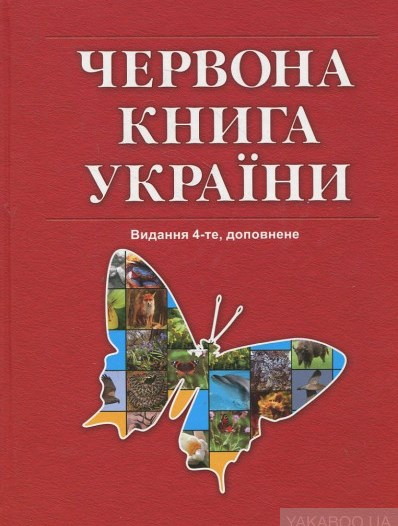

Червона книга України |
Охороняй! |
Меню
|  |
Червона книга України — офіційний державний документ, який містить перелік рідкісних, вразливих і зникаючих видів тваринного і рослинного світу у межах України, а також узагальнені відомості про сучасний стан цих видів і заходи щодо їх збереження. Занесені до Червоної книги України види підлягають охороні на всій території України, у межах її континентального шельфу та виключної морської економічної зони. Станом на квітень 2019 року до Червоної книги України занесено 1369 видів (543 тварин і 826 рослинного світу). Регулюється Законом України «Про Червону книгу України». Державне управління, регулювання та контроль збереження видів, занесених до Червоної книги України здійснюють Кабінет Міністрів України, Міністерство екології та природних ресурсів України та інші державні органи.
|

Вигаданий текст |
(с) Я |